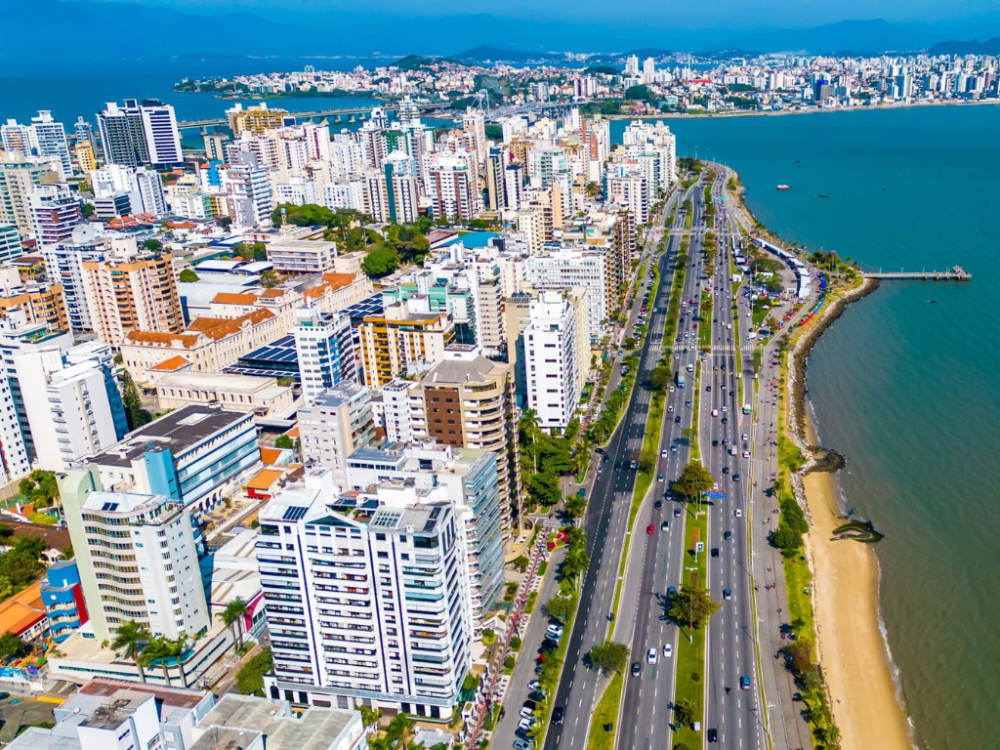

Santa Catarina é um estado localizado na região Sul do Brasil, conhecido por suas belas praias, montanhas e forte influência europeia, especialmente de alemães, italianos e açorianos. Seu litoral atrai turistas de todo o país, com destinos como Florianópolis e Balneário Camboriú, enquanto o interior se destaca pela agricultura, indústria têxtil e produção de alimentos. A cultura catarinense é marcada por festas tradicionais, culinária variada e arquitetura típica, refletindo a diversidade de seus colonizadores. Além disso, o estado apresenta altos índices de qualidade de vida e desenvolvimento humano, sendo um dos mais organizados e prósperos do Brasil.

Voltar